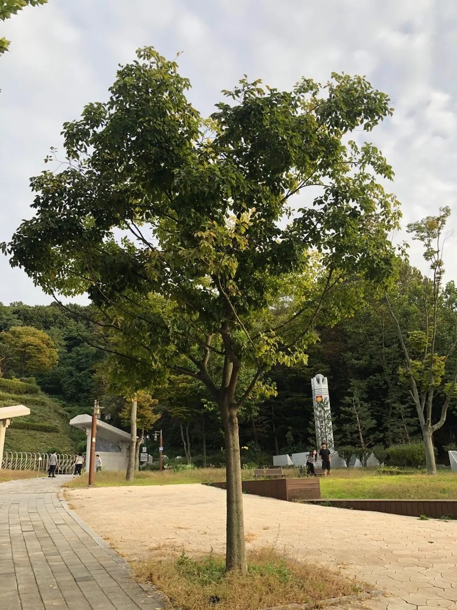

Gallery

Details
- 학명: Celtis sinensis
- 분류: 느릅나무과의 낙엽교목
- 원산지: 한국, 중국, 일본 등 동아시아
- 형태적 특징:
- 높이: 최대 20m
- 줄기:
- 직경 1m까지 성장 가능
- 어두운 회색 수피
- 잎:
- 어긋나게 배열
- 넓은 난형 또는 타원형
- 길이 4-12cm
- 처음에는 양면에 털이 있다가 점차 사라짐
- 꽃과 열매:
- 꽃:
- 연황색
- 4-5월에 개화
- 열매:
- 10월에 익는 구형 핵과
- 직경 7-8mm
- 등황색
- 달콤한 과육 존재
- 꽃:
- 생태학적 특징:
- 서식지: 한국 전역의 낮은 산지와 들
- 성장 환경:
- 양수이지만 어린 나무는 내음성 강함
- 성장 속도 빠름
- 번식: 실생으로 번식, 가을에 채취한 종자로 파종
- 문화적 의미:
- 마을 정자나무
- 마을숲 나무
- 방풍수로 활용
- 어린이들의 놀이 도구(팽총)로 사용
- 특이점:
- 다양한 나비 애벌레의 서식지
- 새와 포유류에 의해 종자 산포
- 독특한 씨앗 구조 (아라고나이트 광물질 포함)
Location
경기도 부천 원미구 원미동, 원미공원